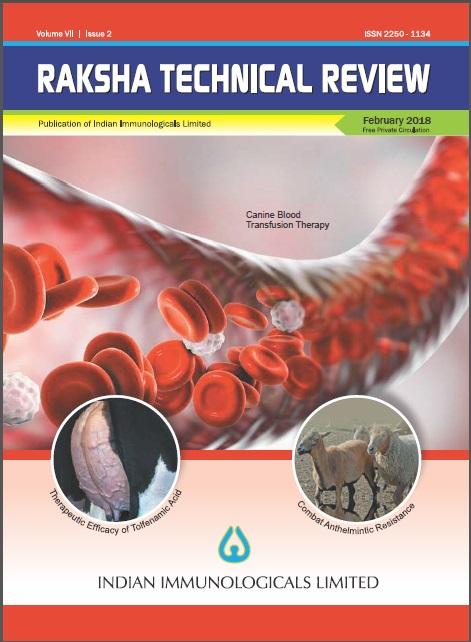
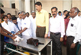
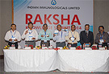
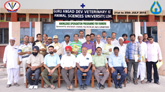

Indian Immunologicals Limited (IIL) operates exclusive CRM department with a committed band of people towards enumerating customer satisfaction and delight. IIL’s CRM department encompasses the process that uses to track and organize its contacts with its current & prospective customers at all levels of its operation.CRM in IIL is about understanding, improving and measuring how effectively identify the customers, market products & services in addition to retain the customers for ever. CRM services internal/external customers like business partners, vendors, employees and other important stakeholders who influence the company’s success. In IIL’s paradigm, CRM provides a platform to obtain a competitive advantage by embracing customer needs and building value-driven long-term relationships.
CRM Activities
IIL conducts series of activities for the customers in order to keep the customer updated about the company’s achievements and its service levels that add strength to the value chain. It is a continuous endeavor at IIL that customer databases are evaluated and updated to provide sufficient care and service to the customer as per their expectations.
IIL also publishes periodicals/Magazines by name Raksha Technical Review and Spandana (in Digital mode) to reach the customers on a regular basis and take their feedback to upgrade the service expectations of the customer.
RAKSHA TECHNICAL REVIEW (RTR):

RTR will contain all scientific articles and latest developments in veterinary practices written by eminent professors of various veterinary colleges and renowned field veterinarians across India. RTR will help to improve the knowledge of field veterinarians with current scientific developments in the field of veterinary science and its allied subjects. The magazine will also bring the latest updates in the field of veterinary sciences and will provide platform to exchange their ideas and experiences.
SPANDANA:

Spandana will herald about the house activities of IIL like Skill up gradation program for doctors, Raksha Knowledge Summit for doctors, Knowledge upgradation program for the farmers and extended customer care services like toll free number etc. The magazine will speak about the activities, developments, achievements, products, services and opportunities in IIL that are of prime importance to the customers.
SKILL UPGRADATION PROGRAMME:

Skill Upgradation programme covers areas in fields of surgery, medicine and gynecology like Artificial Insemination (AI) in bitches, different techniques of surgical procedure, ultrasonography, ECG etc. SUP will help the doctors in improving their practicing skills in addition to provide them with additional reading materials and annotate bibliographies for their references.
RAKSHA KNOWLEDGE SUMMIT – TECHNICAL WORKSHOP:

The workshops are designed in such way that the leading customers across the country are brought to a centralized place for collective sharing of expertise and technical experiences. Leading faculties from Universities and teaching institutes all over the country is invited to deliver lecture on areas like modern techniques in surgery, case management in Medicine and Gynecology. This program has been created by IIL to enhance knowledge sharing and learning in small groups that are structured to gain practical knowledge on modern techniques in Veterinary Sciences.
KNOWLEDGE UPGRADATION PROGRAM (KUP):

The program is designed for the leading farmers who are interested in upgrading their working knowledge on areas like learning new techniques on feeding and breeding management to increase the productivity of their animals. The program aims to improve the economic status of the farmer by reducing the cost of milk production, improving the knowledge on animal wellbeing, improve the quality and quantity of milk.
PLANT VISIT:
The decision makers and trendsetters of the respective specialties are invited to our plant to witness the facility, technology adopted, ISO & cGMP standards for manufacturing the products to display the potential and quality standards adopted by the company. The visit is aimed to infuse confidence in the customer to use the product and service of IIL.
DIAL A CUSTOMER PROGRAM:
The program structured to capture the feedback on products and services provided by IIL through telephonic interactions by trained experts. This will enable IIL to identify the service levels and address the limitations faced by the customers in day to day practices, if any. IIL captures 2400 top customers feedback in a year for assessment.
24 HOURS TOLL FREE NUMBER SERVICE:
This service is available to the customer throughout a year to increase the access to the customer as and when required through telephone call. These applications allow us to interact with customers and instill more confidence levels in them regarding our products and services. Toll free number services also attract new customers who are in need of information, service and advices.
MAILERS:
Periodic technical mailers are sent to the customers for knowledge sharing.
CUSTOMER SERVICE THROUGH MAIL:
The main objective of providing Customer Service through mail is to register online complaint instantly. On receipt of the complaint a ticket will be generated and customer complaint will be confirmed back to customer with timelines to resolve the same depending on the nature of the complaint.
You may post your queries and complains through ahcs@indimmune.com